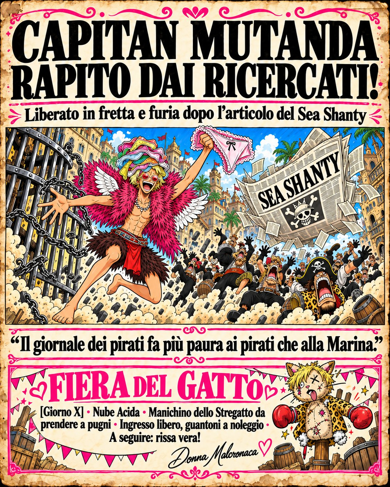
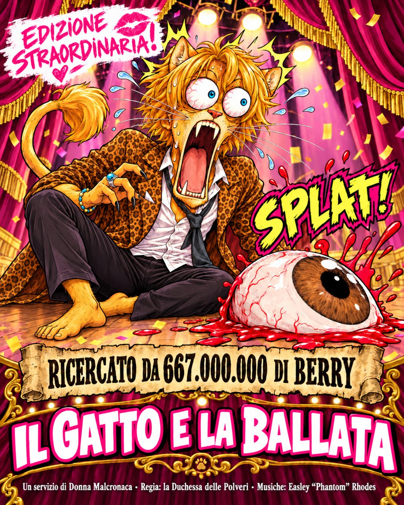

Zou, 1511 · Numero 1 · Cronaca nera
Capitan Mutanda rapito dai ricercati!
Liberato in fretta e furia dopo l'articolo del Sea Shanty

Zou, 1511. Brutte notizie per chi crede ancora che i pirati siano gentiluomini incompresi. Nei giorni scorsi Capitan Mutanda, l'alato più elegante del Nuovo Mondo, noto per l'impeccabile mantellina di piume e per una collezione di biancheria che fa invidia alle sartorie di Water Seven, è stato rapito da un gruppo di ricercati. Appena uscito l'ultimo numero del Sea Shanty, i rapitori lo hanno liberato in fretta e furia, senza chiedere un solo Berry.
E già che siamo in tema di Sea Shanty, rispondiamo volentieri al collega. Ci accusa di essere i cattivi? Ebbene sì: siamo stati noi. L'imboscata, le telecamere, il gatto nel fango, la messinscena. Tutto nostro, e ne andiamo fieri. Così cattivi che persino l'autore dell'articolo è venuto a trovarci, ha visto il video e ci ha scritto la colonna sonora. Una serata deliziosa, in ottima compagnia. Peccato che, tra una nota di flauto e l'altra, nessuno sia andato a recuperare l'amico rimasto nel fango. Caro collega, lei non ci ha smascherati: ci ha accompagnati. E con la musica.
Ci accusa anche di lavorare per lo Shichibukai? Indovinato anche stavolta. Lapin Von Juste ha amici, e da oggi sono i più rumorosi dell'isola. Per dimostrarlo, chi ha osato sfidare lo Shichibukai al duello sacro sappia che dovrà prima passare dal Genio del Male in persona: il Dottor Turco è avvisato, il Genio lo aspetta. Mr. Sbuffo, interpellato sulla questione, non ha rilasciato dichiarazioni. Ha sbuffato.
Ci chiamano cattivi? Ringraziamo per la promozione. E per festeggiare, la redazione annuncia la prima Fiera del Gatto, il [Giorno X], nel cuore della Nube Acida: c'è chi a Zou cerca la cura, noi andiamo a farci male. Al centro della fiera, un manichino dello Stregatto a grandezza naturale, donato ai Moschettieri del Ducato, su cui chiunque potrà finalmente sfogare la propria rabbia a colpi di pugni. Ingresso libero, guantoni a noleggio. Il manichino avrà baffi veri. Almeno uno. Ci stiamo lavorando.
E per chi trova i manichini troppo tranquilli, a seguire una rissa vera, tra le nebbie, con fuochi d'artificio e pubblico pagante. Chi ha qualcosa da ridire, venga pure a dircelo di persona: lo aspettiamo lì.
Capitan Mutanda è sano, salvo e, ci assicurano, perfettamente vestito. Alla redazione resta una sola domanda per i nostri lettori: se i difensori della libertà sono questi, chi difende Zou da loro?
— Donna Malcronaca 💋
Fiera del Gatto
[Giorno X] · Nube Acida · Ingresso libero, guantoni a noleggio · A seguire: rissa vera!

